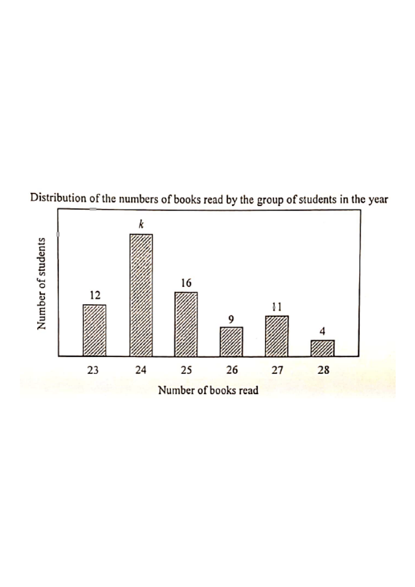

Readout: step 1 — given counts & the probability condition.
The bar chart below shows the distribution of the numbers of books read by a group of students in a year.
If a student is randomly selected from the group, then the probability that the selected student reads fewer than $26$ books in the year is $\dfrac{7}{10}$.
(a) Find $k$.
(b) Write down the range, the inter-quartile range and the standard deviation of the distribution.
[5 marks]

"Fewer than $26$ books" means $23$, $24$ or $25$ books.
The total number of students is
$12+k+16+9+11+4$, so
With $k=28$, the frequencies are:
| Books read | 23 | 24 | 25 | 26 | 27 | 28 |
|---|---|---|---|---|---|---|
| No. of students | 12 | 28 | 16 | 9 | 11 | 4 |
Total students $=80$. Smallest value $=23$,
largest value $=28$, hence
Cumulative frequencies: $12,\,40,\,56,\,65,\,76,\,80$.
$Q_1$: the $20$th value falls in the "$24$" group ($13$–$40$),
so $Q_1=24$.
$Q_3$: the $60$th value falls in the "$26$" group ($57$–$65$),
so $Q_3=26$.
Question. The bar chart shows the numbers of books read by a group of students in a year. The numbers of students reading \(23,24,25,26,27,28\) books are \(10,k,14,8,6,2\) respectively. If a student is chosen at random, the probability that the student reads fewer than \(26\) books is \(\dfrac{3}{4}\). [5 marks]
(a) Find \(k\).
(b) Write down the range, the inter-quartile range and the standard deviation of the distribution.